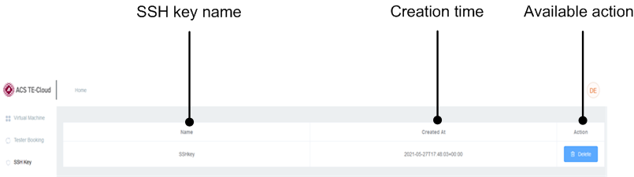

SSH Key page
This page displays the public SSH key you added for the tester.

- SSH key name
- The name you specified when you added the key.
- Creation time
- The date and time when you added the key.
- Available action
- The only available action is deleting the key. You can click the Delete button to delete this key.
If you have not added any key information on this page, only an Add button is displayed and the table is empty. You can add a public SSH key.
Functional changes
- Introduced in SmarTest 7.6.2